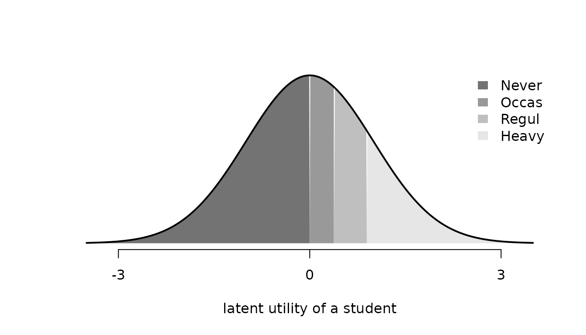

This vignette describes how to specify a probit choice model with
fit(). It covers the normalization of the utility scale and
the prior distribution, which every fit involves, and then the model
variants: the three types of covariates and the alternative-specific
constants, choice sets that differ between occasions, and ordered and
ranked responses. Preference heterogeneity between deciders is the
subject of the vignette Modeling
preference heterogeneity, and Oelschläger (2026) gives the methodological
background. From the covariate types onward, each section first fits the
variant to simulated data and then to a data set of the
AER package (Kleiber and Zeileis 2008), the
MASS package (Venables and Ripley 2002), or
the mlogit package (Croissant 2020). Without data,
fit() simulates the requested model before estimating it,
and summary() prints the true values in a dgp
column beside the posterior summaries, converted to the normalization of
the fit.
Normalization
The probit model introduced in the vignette Get
started with RprobitB assigns every alternative
at occasion
of decider
the latent utility
with jointly normal errors
,
and the decider chooses the alternative with the largest utility. The
choice probability of an alternative is the probability that its utility
exceeds the utilities of all others. These probabilities are invariant
to adding a constant to all utilities and to multiplying all utilities
by a positive number, so neither the level nor the scale of the
utilities is identified. RprobitB therefore works with
utility differences relative to a base alternative, by default the first
in alphabetical order, and fixes one parameter through
scale:
-
scale = NULLfixes the error variance of the first utility difference to one. This is the default. The covariance matrix of the error differences is reported asSigma[<alternative>,<alternative>], with rows and columns named by the alternatives other than the base. For three alternativesA,B, andCwith baseA, its entries areSigma[B,B],Sigma[C,B], andSigma[C,C]. -
scale = c(z = -1)fixes the coefficient ofzto-1instead, so that all other coefficients are measured in units of it. With a price coefficient fixed in this way, the other coefficients are willingness-to-pay values.
The sampler draws all parameters without restriction and rescales
every retained draw afterwards. Variables that the normalization fixes
remain in the draws but are omitted from summary(),
coef(), and vcov().
The following demonstration shows the effect of the normalization on
the reported values. We simulate data with coefficients 1
for x and -0.5 for z and fit them
under the default scale. Simulated alternatives are labeled with capital
letters unless alternatives names them, here A
and B, and A is the base.
update() then refits the same simulated data with the
coefficient of z fixed to -1, so only the
normalization differs between the two fits.
scale_default <- fit(
choice ~ x + z | 0,
dgp_parameters = list(beta = c(x = 1, z = -0.5)),
n_deciders = 300,
chains = 1
)
summary(scale_default)
#> Bayesian probit choice model
#> Formula: choice ~ x + z | 0 | 0
#> Samples: 500 retained per chain, 1 chain
#> variable dgp mean mode sd rhat ess_bulk
#> beta[x] 1.0 1.124 1.079 0.1055 1 36.2
#> beta[z] -0.5 -0.617 -0.604 0.0877 1 51.1
scale_z <- update(scale_default, scale = c(z = -1))
summary(scale_z)
#> Bayesian probit choice model
#> Formula: choice ~ x + z | 0 | 0
#> Samples: 500 retained per chain, 1 chain
#> variable dgp mean mode sd rhat ess_bulk
#> beta[x] 2 1.87 1.80 0.229 1.01 115
#> Sigma[B,B] 4 2.94 2.33 0.932 1.04 47Under the default scale, the dgp column shows the
coefficients as specified. Sigma[B,B], the error variance
of the utility difference between alternative B and the
base A, is fixed to one and therefore not listed. Under the
coefficient normalization, beta[z] is fixed to
-1 instead of its true -0.5, so all utilities
are multiplied by 2: the true beta[x] becomes
2 and the true error variance 4.
summary() converts the true values to the normalization of
the fit, so the dgp column remains comparable.
The convergence diagnostics of the two tables differ because
update() runs the sampler again and because the rescaled
variables are different functions of the draws: beta[x] is
now a ratio of two coefficients, which mixes differently than a single
coefficient.
Prior distribution
RprobitB estimates every model with a Gibbs sampler,
which draws each block of parameters in turn from its conditional
posterior distribution given the other parameters and the latent
utilities. The prior is conjugate for every block, so each conditional
posterior belongs to the same family as the prior. Fixed coefficients
and class means have normal priors, covariance matrices have inverse
Wishart priors, class weights have a Dirichlet prior, and the
log-increments between ordered thresholds have a normal prior. The
section “Prior distribution” of ?fit lists all components
with their defaults, which are weakly informative for coefficients and
covariances. Single components are overridden through a named list, and
the complete prior of a fit is stored in its prior
component.
The following demonstration simulates 100 deciders with a true
coefficient of -1 under the default prior and then refits
the same data under two priors with mean 1: a moderate one
with variance 0.5 and a tight one with variance
0.01.
default_prior <- fit(
choice ~ x | 0,
dgp_parameters = list(beta = c(x = -1)),
chains = 1
)
default_prior$prior
#> $fixed_mean
#> [1] 0
#>
#> $fixed_covariance
#> [,1]
#> [1,] 10
#>
#> $error_covariance_df
#> [1] 3
#>
#> $error_covariance_scale
#> [,1]
#> [1,] 1
summary(default_prior)
#> Bayesian probit choice model
#> Formula: choice ~ x | 0 | 0
#> Samples: 500 retained per chain, 1 chain
#> variable dgp mean mode sd rhat ess_bulk
#> beta[x] -1 -1.02 -0.986 0.163 1.02 46.3
moderate_prior <- update(
default_prior, prior = list(fixed_mean = 1, fixed_covariance = matrix(0.5))
)
tight_prior <- update(
default_prior, prior = list(fixed_mean = 1, fixed_covariance = matrix(0.01))
)
data.frame(
variable = "beta[x]", dgp = -1, default = coef(default_prior),
moderate = coef(moderate_prior), tight = coef(tight_prior),
row.names = NULL
)
#> variable dgp default moderate tight
#> 1 beta[x] -1 -1.016823 -0.9577477 0.1240365The table compares the posterior means under the three priors with
the true value. The moderate prior shifts the posterior mean only
slightly towards the prior mean. The tight prior has a standard
deviation of 0.1 around 1, outweighs the data,
and pulls the posterior mean far away from the true value. A prior on a
coefficient is unproblematic as long as its variance reflects the actual
uncertainty about the coefficient.
Covariate types and alternative-specific constants
The formula choice ~ A | B | C distinguishes three kinds
of covariates: attributes of the alternatives with one shared
coefficient (A), characteristics of the decider with
alternative-specific coefficients (B), and attributes of
the alternatives with alternative-specific coefficients
(C). Alternative-specific constants are included by default
and removed with 0 in the second part. The following
demonstration simulates all three types at once, and
summary() shows the posterior summaries beside the true
values.
covariate_types <- fit(
choice ~ x | z | w,
n_deciders = 500,
dgp_parameters = list(beta = c(
x = 0.5, z_B = -0.5, ASC_B = 0.25, w_A = -0.5, w_B = 0.5
)),
chains = 1
)
summary(covariate_types)
#> Bayesian probit choice model
#> Formula: choice ~ x | z | w
#> Samples: 500 retained per chain, 1 chain
#> variable dgp mean mode sd rhat ess_bulk
#> beta[x] 0.50 0.510 0.512 0.0593 1.01 87
#> beta[z_B] -0.50 -0.512 -0.527 0.0730 1.01 117
#> beta[ASC_B] 0.25 0.234 0.236 0.0680 1.01 147
#> beta[w_A] -0.50 -0.433 -0.427 0.0649 1.00 160
#> beta[w_B] 0.50 0.306 0.282 0.0702 1.00 146The summary lists the shared coefficient of x, the
coefficient of z and the constant of alternative
B, and the two alternative-specific coefficients of
w, each beside its true value. base selects
the alternative against which the alternative-specific coefficients are
measured, by default the first in alphabetical order, here
A. Switching the base to B changes only the
parameterization, not the model:
base_b <- update(covariate_types, base = "B")
coef(base_b)[c("beta[x]", "beta[z_A]", "beta[ASC_A]")]
#> beta[x] beta[z_A] beta[ASC_A]
#> 0.5193362 0.5230973 -0.2385689The shared coefficient of x is unchanged up to Monte
Carlo error, while the coefficient of z and the constant
now describe alternative A relative to B and
therefore change sign.
In 1987, 210 travelers between Sydney and Melbourne reported which of
four modes they had taken: air, train, bus, or car. The
TravelMode data of the AER package (Kleiber and Zeileis
2008) are in long format with one row per mode and a
"yes"/"no" indicator of the chosen mode, which
fit() expects as a logical or 0/1
variable. Terminal waiting time (wait), in-vehicle cost
(vcost), and travel time (travel) vary across
modes and enter as type A. Household income and the size of
the traveling party describe the traveler and enter as type
B, with the alternative-specific constants included by
default. Cost and income are converted from Australian dollars to
euro.
travel_formula <- choice ~ wait + vcost + travel | income + sizeThe first alternative in alphabetical order, air, is the
base, so the constants and the coefficients of income and party size
describe the other modes relative to flying.
data("TravelMode", package = "AER")
TravelMode$choice <- TravelMode$choice == "yes"
TravelMode$vcost <- TravelMode$vcost / 1.6196
TravelMode$income <- TravelMode$income / 1.6196
travel <- fit(
formula = travel_formula,
data = TravelMode,
format = "long",
column_decider = "individual",
column_alternative = "mode",
iterations = 20000,
warmup = 10000,
thin = 20,
chains = 2,
progress = FALSE
)
summary(travel)
#> Bayesian probit choice model
#> Formula: choice ~ wait + vcost + travel | income + size | 0
#> Samples: 500 retained per chain, 2 chains
#>
#> variable mean mode sd rhat ess_bulk
#> beta[wait] -0.04190 -0.04068 0.006463 1.004 366
#> beta[vcost] -0.00933 -0.00961 0.006023 1.001 871
#> beta[travel] -0.00228 -0.00207 0.000502 1.005 543
#> beta[income_bus] -0.01968 -0.01784 0.011561 1.001 664
#> beta[income_car] -0.00781 -0.00743 0.011476 1.001 747
#> beta[income_train] -0.05558 -0.05255 0.014245 1.000 560
#> beta[size_bus] 0.32076 0.34302 0.159507 1.001 620
#> beta[size_car] 0.44812 0.39388 0.140953 0.999 653
#> beta[size_train] 0.54106 0.56530 0.162805 1.000 603
#> beta[ASC_bus] -0.30811 -0.38835 0.494884 1.006 454
#> beta[ASC_car] -2.39816 -2.37504 0.689873 1.000 378
#> beta[ASC_train] 0.16482 0.04990 0.468125 1.004 580
#> Sigma[bus,car] 0.79569 0.72354 0.206590 1.001 299
#> Sigma[car,car] 1.28001 0.98104 0.506336 1.002 358
#> Sigma[bus,train] 0.86838 0.87828 0.196564 1.019 322
#> Sigma[car,train] 0.86047 0.77014 0.354483 1.007 297
#> Sigma[train,train] 1.35717 1.21939 0.447659 1.004 445The three attribute coefficients are negative: waiting, cost, and
travel time reduce the utility of a mode. The income and party size
coefficients are alternative-specific and have no direct interpretation
on the utility scale, so interpret(type = "mea") computes
marginal effects, the derivatives of the choice probabilities with
respect to a covariate, for a traveler with average covariates:
mode_effects <- interpret(travel, type = "mea")
mode_effects[mode_effects$covariate == "income", ]
#> Marginal effects at the average covariate values
#> Change in the probability of the alternative per unit of the covariate, with 95% interval
#> covariate alternative at mean sd lower upper
#> income air 21.3 0.00963 0.00351 0.00302 0.01665
#> income bus 21.3 0.00134 0.00246 -0.00335 0.00626
#> income car 21.3 0.00883 0.00376 0.00166 0.01656
#> income train 21.3 -0.01981 0.00444 -0.02911 -0.01176A higher household income lowers the probability of the train and raises the probabilities of the plane and the car.
Individual choice sets
Not every alternative is available at every occasion: a traveler without a car cannot drive, and a route without a rail link has no train option. Unordered choices can therefore be made from occasion-specific subsets of the alternatives. In long format, an occasion lists only the rows of its available alternatives, and no further argument is needed. The sampler imputes the latent utilities of unavailable alternatives without restriction, so they do not affect the choice, and predictions assign them probability zero.
Between Montreal and Toronto, travelers can fly, drive, or take the
train, but not all modes are available on every trip. The
ModeCanada data of the mlogit package
cover 4324 trips in this corridor (Bhat 1995).
data("ModeCanada", package = "mlogit")
head(ModeCanada)
#> # A tibble: 6 × 11
#> case alt choice dist cost ivt ovt freq income urban noalt
#> <int> <fct> <int> <dbl> <dbl> <dbl> <dbl> <dbl> <dbl> <dbl> <int>
#> 1 1 train 0 83 28.2 50 66 4 45 0 2
#> 2 1 car 1 83 15.8 61 0 0 45 0 2
#> 3 2 train 0 83 28.2 50 66 4 25 0 2
#> 4 2 car 1 83 15.8 61 0 0 25 0 2
#> 5 3 train 0 83 28.2 50 66 4 70 0 2
#> 6 3 car 1 83 15.8 61 0 0 70 0 2Cost (cost), in-vehicle time (ivt),
out-of-vehicle time (ovt), and service frequency
(freq) vary across modes; household income and the number
of urban trip endpoints are trip-specific. The data also contain the
bus, which was chosen on only 16 trips, too few to identify its
coefficients and error covariances, so the bus rows and the trips on
which it was chosen are removed. Cost and income are converted from
Canadian dollars to euro, and trips with a single remaining alternative
are dropped.
ModeCanada$cost <- ModeCanada$cost / 1.6151
ModeCanada$income <- ModeCanada$income / 1.6151
bus_trips <- ModeCanada$case[ModeCanada$alt == "bus" & ModeCanada$choice == 1]
canada_data <- ModeCanada[
ModeCanada$alt != "bus" & !(ModeCanada$case %in% bus_trips),
]
set_size <- table(canada_data$case)
canada_data <- canada_data[set_size[as.character(canada_data$case)] > 1, ]
table(table(canada_data$case))
#>
#> 2 3
#> 713 3593The choice sets are read from the rows of each trip. Every trip is
one decider, and the model has the same structure as the travel mode
model above: three attributes of type A, two trip
characteristics of type B, and the constants, all relative
to air.
canada <- fit(
choice ~ cost + ivt + ovt + freq | income + urban,
data = canada_data,
format = "long",
column_decider = "case",
column_alternative = "alt",
iterations = 20000,
warmup = 10000,
thin = 10,
chains = 2,
progress = FALSE
)
summary(canada)
#> Bayesian probit choice model
#> Formula: choice ~ cost + ivt + ovt + freq | income + urban | 0
#> Samples: 1000 retained per chain, 2 chains
#>
#> variable mean mode sd rhat ess_bulk
#> beta[cost] -0.03984 -0.04029 0.003431 1.06 40.8
#> beta[ivt] -0.00525 -0.00516 0.000411 1.01 299.0
#> beta[ovt] -0.01652 -0.01653 0.001180 1.00 611.6
#> beta[freq] 0.04246 0.04245 0.002401 1.00 1072.3
#> beta[income_car] -0.02041 -0.01987 0.002796 1.01 594.5
#> beta[income_train] -0.03635 -0.03641 0.003607 1.01 436.9
#> beta[urban_car] -0.26051 -0.24476 0.050660 1.00 806.9
#> beta[urban_train] 0.13590 0.14618 0.058486 1.00 569.0
#> beta[ASC_car] -0.58504 -0.54078 0.283682 1.07 37.9
#> beta[ASC_train] -0.25283 -0.26986 0.287186 1.08 23.4
#> Sigma[car,train] 0.56636 0.56680 0.099594 1.07 41.8
#> Sigma[train,train] 1.40236 1.34601 0.225902 1.01 166.5The income coefficients of car and train are negative: a higher income increases the probability of flying.
Ordered responses
Some responses are ordered levels. An ordered model has one latent
utility per occasion and compares it with increasing thresholds
gamma; the level is the interval into which the utility
falls. alternatives gives the response levels in increasing
order. Latent-variable data augmentation provides a direct Bayesian
treatment of ordered probit models (Albert and Chib 1993). The following
demonstration estimates a simulated three-category model and reports the
coefficient and the free threshold beside their true values.
ordered_sim <- fit(
choice ~ x | 0,
alternatives = c("low", "middle", "high"),
choice_type = "ordered",
n_deciders = 500,
dgp_parameters = list(beta = c(x = 1), gamma = c(0, 1)),
chains = 1
)
summary(ordered_sim)
#> Bayesian probit choice model
#> Formula: choice ~ x | 0 | 0
#> Samples: 500 retained per chain, 1 chain
#> variable dgp mean mode sd rhat ess_bulk
#> beta[x] 1 1.067 1.091 0.0768 1.04 74.7
#> gamma[2] 1 0.926 0.891 0.0624 1.05 144.1The summary lists the coefficient and the free threshold
gamma[2] beside their true values. The first threshold is
fixed to zero and the error variance to one, which identifies the level
and the scale of the utility.
The survey data of the MASS package
(Venables and
Ripley 2002) come from 237 statistics students at the
University of Adelaide who reported how often they smoke, together with
their age and how much they exercise. The smoking level
Smoke is stored as a factor whose levels are in
alphabetical order; alternatives puts them in their natural
order from never to heavy. The other survey questions are not used;
fit() ignores their missing values.
data("survey", package = "MASS")
levels(survey$Smoke)
#> [1] "Heavy" "Never" "Occas" "Regul"
smoking_levels <- c("Never", "Occas", "Regul", "Heavy")
smoking <- fit(
Smoke ~ Age + Exer | 0,
data = survey,
alternatives = smoking_levels,
choice_type = "ordered",
column_decider = NULL,
chains = 1
)
summary(smoking)
#> Bayesian probit choice model
#> Formula: Smoke ~ Age + Exer | 0 | 0
#> Samples: 500 retained per chain, 1 chain
#> variable mean mode sd rhat ess_bulk
#> beta[Age] -0.0286 -0.028 0.0058 1 144
#> beta[ExerNone] -0.1815 -0.127 0.2977 1 219
#> beta[ExerSome] -0.4658 -0.480 0.1888 1 114
#> gamma[2] 0.3777 0.401 0.0824 1 108
#> gamma[3] 0.8967 0.837 0.1332 1 155With four levels, the thresholds gamma[2] and
gamma[3] are estimated. Each student has one latent
utility, normally distributed around its systematic part, and the
thresholds partition it into the four levels. The area under the density
between two thresholds is the probability of that level. The figure
shows the density of a student whose systematic utility is zero.
thresholds <- coef(smoking)[c("gamma[2]", "gamma[3]")]
cuts <- c(-Inf, 0, thresholds, Inf)
shades <- grey(seq(0.45, 0.9, length.out = length(smoking_levels)))
utility <- seq(-3.5, 3.5, length.out = 400)
plot(
utility, dnorm(utility),
type = "n", axes = FALSE, ylab = "",
xlab = "latent utility of a student"
)
for (k in seq_along(smoking_levels)) {
inside <- utility >= cuts[k] & utility <= cuts[k + 1]
polygon(
c(max(cuts[k], -3.5), utility[inside], min(cuts[k + 1], 3.5)),
c(0, dnorm(utility[inside]), 0),
col = shades[k], border = NA
)
}
lines(utility, dnorm(utility), lwd = 2)
axis(1, at = c(-3, 0, 3))
legend(
"topright", legend = smoking_levels, fill = shades, border = NA, bty = "n"
)
A covariate shifts the density along the utility axis, so one
coefficient per covariate describes its effect on all four levels. The
age coefficient is negative: older students report smoking less. The
factor Exer enters through its dummy variables relative to
the students who exercise frequently.
interpret(type = "ame") translates the age coefficient into
probabilities: it differentiates the probability of each level with
respect to age and averages the derivatives over the students. The
vignette Posterior
prediction explains marginal effects in more detail.
age_effects <- interpret(smoking, type = "ame")
age_effects
#> Average marginal effects on the choice probabilities
#> Change in the probability of the alternative per unit of the covariate, with 95% interval
#> covariate alternative mean sd lower upper
#> Age Never 0.00817 0.001405 0.00529 0.01078
#> Age Occas -0.00234 0.000657 -0.00370 -0.00118
#> Age Regul -0.00285 0.000693 -0.00430 -0.00162
#> Age Heavy -0.00297 0.000760 -0.00453 -0.00162One more year of age raises the probability of never smoking by about 0.8 percentage points and lowers the probabilities of the other three levels.
Ranked responses
Ranked data record the complete order of the alternatives. In wide
format, the response columns combine the response name with each
alternative, for example rank_Xbox. The model is the same
probit model as for unordered choices, but the likelihood uses the full
ordering of the utilities. The following demonstration simulates
rankings of three alternatives and compares the coefficient and the free
covariance parameters with the true values.
ranked_sim <- fit(
rank ~ x | 0,
choice_type = "ranked",
n_deciders = 300,
dgp_parameters = list(
beta = c(x = 1),
Sigma = rbind(c(0, 0, 0), c(0, 1, 0.2), c(0, 0.2, 1))
),
chains = 1
)
summary(ranked_sim, variables = c("beta[x]", "Sigma[C,B]", "Sigma[C,C]"))
#> Bayesian probit choice model
#> Formula: rank ~ x | 0 | 0
#> Samples: 500 retained per chain, 1 chain
#> variable dgp mean mode sd rhat ess_bulk
#> beta[x] 1.0 1.227 1.225 0.0945 1.04 33.7
#> Sigma[C,B] 0.2 0.179 0.145 0.1598 1.02 52.0
#> Sigma[C,C] 1.0 1.644 1.607 0.3746 1.00 60.3The Game data of the mlogit package
contain complete rankings of six gaming platforms by 91 Dutch
respondents, together with whether they own each platform
(own), their age, and their weekly gaming hours; the source
study develops a rank-ordered choice model for these data (Fok et
al. 2012). The ranks are stored in the columns
ch.Xbox, ch.PlayStation, and so on, so the
response in the formula is ch and
delimiter = "." separates it from the alternative.
data("Game", package = "mlogit")
gaming <- fit(
ch ~ own | age + hours,
data = Game,
alternatives = c(
"Xbox", "PlayStation", "PSPortable", "GameCube", "GameBoy", "PC"
),
choice_type = "ranked",
delimiter = ".",
column_decider = NULL,
iterations = 2000,
warmup = 1000,
chains = 2,
progress = FALSE
)
coef(gaming)[1:6]
#> beta[own] beta[age.GameCube] beta[age.PC]
#> 0.8614642753 0.0071039586 0.0633536522
#> beta[age.PlayStation] beta[age.PSPortable] beta[age.Xbox]
#> 0.0324054727 0.0006079602 0.0225638508The coefficient of own is positive: owning a platform
raises its rank. The alternative-specific constants and the coefficients
of age and hours are relative to the base
alternative GameBoy. Which platform gains from additional
gaming hours? For a ranked model, the marginal effects of
interpret() refer to the probability of being ranked first,
here for a respondent of average age who plays the average number of
hours:
platform_effects <- interpret(gaming, type = "mea")
platform_effects[platform_effects$covariate == "hours", ]
#> Marginal effects at the average covariate values
#> Change in the probability of the alternative per unit of the covariate, with 95% interval
#> covariate alternative at mean sd lower upper
#> hours GameBoy 3.88 -0.00213 0.00132 -0.00542 -0.000292
#> hours GameCube 3.88 -0.00557 0.00386 -0.01375 0.001710
#> hours PC 3.88 0.03477 0.01172 0.01299 0.059899
#> hours PlayStation 3.88 -0.00435 0.00761 -0.01968 0.010315
#> hours PSPortable 3.88 -0.00898 0.00375 -0.01727 -0.002997
#> hours Xbox 3.88 -0.01374 0.00760 -0.03012 0.000192Heavy gamers prefer the PC: every additional weekly hour raises the probability of ranking it first by about 3.5 percentage points.
Further reading
The vignette Modeling preference heterogeneity covers coefficients that differ between deciders. The vignette Posterior prediction computes predictions and marginal effects from a fitted model, and the vignette Bayesian model evaluation compares competing specifications.